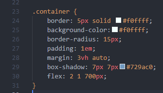

The CSS box model describes the way each element is handled in css. It includes and specifies things such as an objects size, as well as how it relates and sits around other objects on a webpage.
The CSS box model creates a series of, well boxes around each element. The innermost of these concentric boxes is the padding, or the space around an element. Imagine a kitten in a box. The kitten is the cute element, and the padding is the space between the kitten and the edge of the box. Moving out, the next box is the border. These are the walls of the box that the kitten is hiding in. The walls can be painted different colours, and the thickness can be changed. Finally, the outermost of these boxes, the margin, is the space between this box and all the other kitten boxes in the room.
The CSS box model is used, well, EVERYWHERE! Almost every element we work with in CSS uses it. The text you are readiig right now has padding, the space between it and the edge of the middle blue box youre looking at, and it has a border, the edge of that box, and it has a margin, the space between it and the other boxes around it!
Here is an image of the CSS box model. As you can see it includes an element, or content, as well as the padding surrounding it, a border, and finally a margin. It took me a little while to get the hang of these principles, and being able to visualize how they relate to one another is still confusing to me, however keeping an image like this one handy helped me alot and I can highly recomment you do the same.
Here is what it looks like in a snippet of code from the very page youre looking at! You can see the values of each of the elements of a box model are declared within the .container class!
